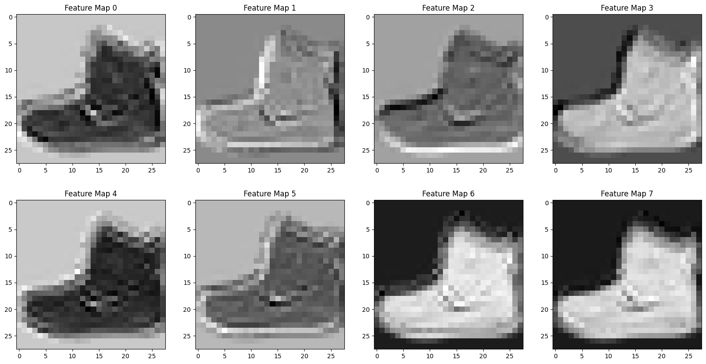
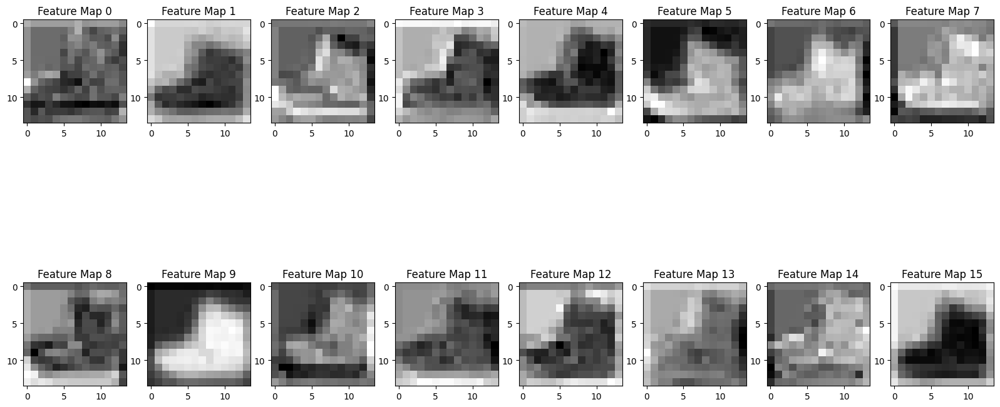
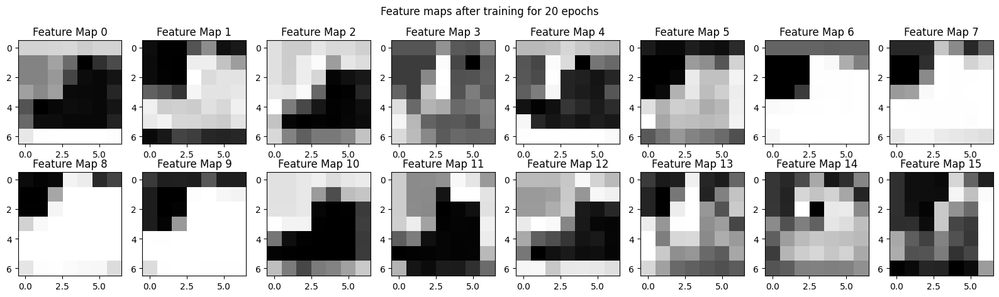
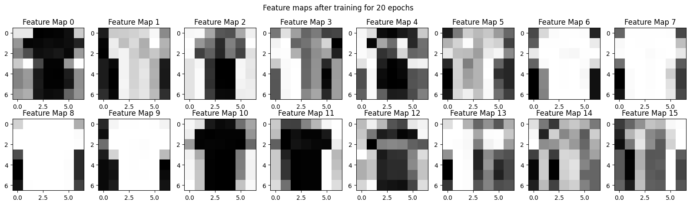
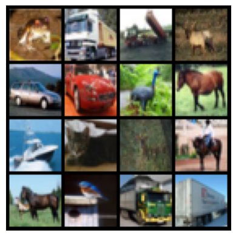

Convolutions and Image Processing#
This week we introduced the convolutional layer as a way to help with problems involving image classification. This notebook reviews the big idea of a convolution and its basic useage in image classification.
from IPython.display import YouTubeVideo
import numpy as np
import matplotlib.pyplot as plt
import pandas as pd
import torch
import torch.nn as nn
import torch.optim as optim
from torch.utils.data import DataLoader
from torchvision.datasets import FashionMNIST
from torchvision.transforms import ToTensor
import torch.nn as nn
import torch.optim as optim
import torch
Using pytorch to build convolutional network#

from IPython.display import Image
train = FashionMNIST('.', download = True)
plt.imshow(train[0][0], cmap = 'gray')
Downloading http://fashion-mnist.s3-website.eu-central-1.amazonaws.com/train-images-idx3-ubyte.gz
Downloading http://fashion-mnist.s3-website.eu-central-1.amazonaws.com/train-images-idx3-ubyte.gz to ./FashionMNIST/raw/train-images-idx3-ubyte.gz
0%| | 0/26421880 [00:00<?, ?it/s]
0%|▏ | 65536/26421880 [00:00<00:43, 603289.29it/s]
1%|▍ | 196608/26421880 [00:00<00:28, 904467.66it/s]
2%|█ | 425984/26421880 [00:00<00:20, 1256430.44it/s]
3%|█▊ | 720896/26421880 [00:00<00:17, 1431414.17it/s]
4%|██▌ | 1081344/26421880 [00:00<00:15, 1664874.57it/s]
6%|███▌ | 1474560/26421880 [00:00<00:13, 1849060.92it/s]
7%|████▍ | 1835008/26421880 [00:01<00:12, 1973772.90it/s]
8%|████▉ | 2031616/26421880 [00:01<00:12, 1893078.21it/s]
9%|█████▊ | 2392064/26421880 [00:01<00:10, 2196769.83it/s]
10%|██████▎ | 2621440/26421880 [00:01<00:12, 1981870.73it/s]
11%|███████▏ | 2981888/26421880 [00:01<00:10, 2151577.58it/s]
12%|███████▊ | 3211264/26421880 [00:01<00:11, 2081249.12it/s]
14%|████████▋ | 3571712/26421880 [00:01<00:10, 2184166.38it/s]
14%|█████████▏ | 3801088/26421880 [00:01<00:10, 2160710.10it/s]
16%|██████████ | 4161536/26421880 [00:02<00:10, 2176870.56it/s]
17%|██████████▊ | 4489216/26421880 [00:02<00:09, 2430711.78it/s]
18%|███████████▌ | 4751360/26421880 [00:02<00:09, 2299755.79it/s]
19%|████████████▏ | 5013504/26421880 [00:02<00:09, 2198302.12it/s]
20%|████████████▉ | 5341184/26421880 [00:02<00:08, 2432340.43it/s]
21%|█████████████▌ | 5603328/26421880 [00:02<00:09, 2118365.38it/s]
22%|██████████████▎ | 5898240/26421880 [00:02<00:08, 2316191.46it/s]
23%|██████████████▉ | 6160384/26421880 [00:02<00:08, 2390251.03it/s]
24%|███████████████▌ | 6422528/26421880 [00:03<00:09, 2032416.45it/s]
26%|████████████████▌ | 6815744/26421880 [00:03<00:09, 2080383.98it/s]
27%|█████████████████▍ | 7208960/26421880 [00:03<00:08, 2209362.42it/s]
28%|██████████████████ | 7438336/26421880 [00:03<00:08, 2159462.63it/s]
30%|██████████████████▉ | 7831552/26421880 [00:03<00:07, 2380768.76it/s]
31%|███████████████████▌ | 8093696/26421880 [00:03<00:08, 2245686.57it/s]
32%|████████████████████▌ | 8486912/26421880 [00:04<00:07, 2303218.17it/s]
33%|█████████████████████▏ | 8749056/26421880 [00:04<00:07, 2364340.05it/s]
34%|██████████████████████ | 9109504/26421880 [00:04<00:06, 2654330.39it/s]
36%|██████████████████████▊ | 9404416/26421880 [00:04<00:07, 2354021.29it/s]
37%|███████████████████████▋ | 9764864/26421880 [00:04<00:06, 2465984.63it/s]
38%|███████████████████████▉ | 10027008/26421880 [00:04<00:07, 2323165.38it/s]
39%|████████████████████████▊ | 10387456/26421880 [00:04<00:06, 2625776.31it/s]
40%|█████████████████████████▍ | 10682368/26421880 [00:04<00:05, 2678068.40it/s]
42%|██████████████████████████▏ | 10977280/26421880 [00:05<00:06, 2375779.72it/s]
43%|███████████████████████████▏ | 11403264/26421880 [00:05<00:06, 2374861.01it/s]
45%|████████████████████████████▎ | 11894784/26421880 [00:05<00:05, 2492701.99it/s]
47%|█████████████████████████████▍ | 12353536/26421880 [00:05<00:04, 2942429.67it/s]
48%|██████████████████████████████▏ | 12681216/26421880 [00:05<00:06, 2074862.04it/s]
49%|██████████████████████████████▊ | 12943360/26421880 [00:05<00:06, 2155481.81it/s]
50%|███████████████████████████████▋ | 13303808/26421880 [00:06<00:05, 2443157.99it/s]
52%|████████████████████████████████▌ | 13631488/26421880 [00:06<00:04, 2619311.02it/s]
53%|█████████████████████████████████▍ | 14024704/26421880 [00:06<00:04, 2628042.42it/s]
55%|██████████████████████████████████▍ | 14450688/26421880 [00:06<00:04, 2902552.81it/s]
56%|███████████████████████████████████▍ | 14843904/26421880 [00:06<00:03, 3152245.41it/s]
58%|████████████████████████████████████▎ | 15204352/26421880 [00:06<00:03, 2990448.02it/s]
59%|█████████████████████████████████████▎ | 15663104/26421880 [00:06<00:03, 3395843.03it/s]
61%|██████████████████████████████████████▏ | 16023552/26421880 [00:06<00:03, 3349495.93it/s]
62%|███████████████████████████████████████▏ | 16449536/26421880 [00:06<00:03, 3247306.53it/s]
64%|████████████████████████████████████████▍ | 16973824/26421880 [00:07<00:02, 3585310.16it/s]
66%|█████████████████████████████████████████▌ | 17432576/26421880 [00:07<00:02, 3432949.79it/s]
68%|██████████████████████████████████████████▉ | 17989632/26421880 [00:07<00:02, 3854518.64it/s]
70%|████████████████████████████████████████████ | 18481152/26421880 [00:07<00:02, 3584025.08it/s]
72%|█████████████████████████████████████████████▏ | 18939904/26421880 [00:07<00:01, 3817266.52it/s]
74%|██████████████████████████████████████████████▍ | 19496960/26421880 [00:07<00:01, 4256664.84it/s]
76%|███████████████████████████████████████████████▋ | 19988480/26421880 [00:07<00:01, 3827116.83it/s]
78%|████████████████████████████████████████████████▉ | 20512768/26421880 [00:07<00:01, 4039641.90it/s]
80%|██████████████████████████████████████████████████▍ | 21135360/26421880 [00:08<00:01, 4552277.60it/s]
82%|███████████████████████████████████████████████████▌ | 21626880/26421880 [00:08<00:01, 4337074.05it/s]
84%|████████████████████████████████████████████████████▊ | 22151168/26421880 [00:08<00:01, 4238308.44it/s]
86%|██████████████████████████████████████████████████████▏ | 22708224/26421880 [00:08<00:00, 4538055.11it/s]
88%|███████████████████████████████████████████████████████▋ | 23330816/26421880 [00:08<00:00, 4967002.27it/s]
90%|████████████████████████████████████████████████████████▉ | 23855104/26421880 [00:08<00:00, 5024509.54it/s]
92%|██████████████████████████████████████████████████████████▏ | 24412160/26421880 [00:08<00:00, 4719488.98it/s]
95%|███████████████████████████████████████████████████████████▋ | 25034752/26421880 [00:08<00:00, 4762826.86it/s]
97%|█████████████████████████████████████████████████████████████▏ | 25657344/26421880 [00:09<00:00, 5139725.06it/s]
99%|██████████████████████████████████████████████████████████████▌| 26214400/26421880 [00:09<00:00, 5244406.29it/s]
100%|███████████████████████████████████████████████████████████████| 26421880/26421880 [00:09<00:00, 2894189.69it/s]
Extracting ./FashionMNIST/raw/train-images-idx3-ubyte.gz to ./FashionMNIST/raw
Downloading http://fashion-mnist.s3-website.eu-central-1.amazonaws.com/train-labels-idx1-ubyte.gz
Downloading http://fashion-mnist.s3-website.eu-central-1.amazonaws.com/train-labels-idx1-ubyte.gz to ./FashionMNIST/raw/train-labels-idx1-ubyte.gz
0%| | 0/29515 [00:00<?, ?it/s]
100%|██████████████████████████████████████████████████████████████████████| 29515/29515 [00:00<00:00, 325834.31it/s]
Extracting ./FashionMNIST/raw/train-labels-idx1-ubyte.gz to ./FashionMNIST/raw
Downloading http://fashion-mnist.s3-website.eu-central-1.amazonaws.com/t10k-images-idx3-ubyte.gz
Downloading http://fashion-mnist.s3-website.eu-central-1.amazonaws.com/t10k-images-idx3-ubyte.gz to ./FashionMNIST/raw/t10k-images-idx3-ubyte.gz
0%| | 0/4422102 [00:00<?, ?it/s]
1%|█ | 65536/4422102 [00:00<00:14, 304724.79it/s]
3%|█▉ | 131072/4422102 [00:00<00:09, 438348.26it/s]
8%|█████▍ | 360448/4422102 [00:00<00:03, 1104600.73it/s]
17%|███████████▏ | 753664/4422102 [00:00<00:01, 1848844.70it/s]
39%|█████████████████████████▌ | 1736704/4422102 [00:00<00:00, 4244833.56it/s]
64%|█████████████████████████████████████████▉ | 2850816/4422102 [00:00<00:00, 6295146.96it/s]
100%|█████████████████████████████████████████████████████████████████| 4422102/4422102 [00:00<00:00, 9117464.52it/s]
100%|█████████████████████████████████████████████████████████████████| 4422102/4422102 [00:00<00:00, 5159267.84it/s]
Extracting ./FashionMNIST/raw/t10k-images-idx3-ubyte.gz to ./FashionMNIST/raw
Downloading http://fashion-mnist.s3-website.eu-central-1.amazonaws.com/t10k-labels-idx1-ubyte.gz
Downloading http://fashion-mnist.s3-website.eu-central-1.amazonaws.com/t10k-labels-idx1-ubyte.gz to ./FashionMNIST/raw/t10k-labels-idx1-ubyte.gz
0%| | 0/5148 [00:00<?, ?it/s]
100%|███████████████████████████████████████████████████████████████████████| 5148/5148 [00:00<00:00, 4247939.60it/s]
Extracting ./FashionMNIST/raw/t10k-labels-idx1-ubyte.gz to ./FashionMNIST/raw
<matplotlib.image.AxesImage at 0x12db1ce60>
train = FashionMNIST('.', download = True, transform=ToTensor())
trainloader = DataLoader(train, batch_size = 32)
train[0][0].shape
torch.Size([1, 28, 28])
conv1 = nn.Conv2d(in_channels=1, out_channels=8, kernel_size=3, padding = 1)
output = conv1(train[0][0].unsqueeze(0))
fig, ax = plt.subplots(2, 4, figsize = (20, 10))
counter = 0
for i in range(2):
for j in range(4):
ax[i, j].imshow(output[0][counter].detach().numpy(), cmap = 'gray')
ax[i,j].set_title(f'Feature Map {counter}')
counter += 1

pool = nn.MaxPool2d(2)
output_pool = pool(output)
output_pool[0].shape
torch.Size([8, 14, 14])
conv2 = nn.Conv2d(in_channels=8, out_channels=16, kernel_size=3, padding = 1)
output_conv2 = conv2(output_pool)
fig, ax = plt.subplots(2, 8, figsize = (20, 10))
counter = 0
for i in range(2):
for j in range(8):
ax[i, j].imshow(output_conv2[0][counter].detach().numpy(), cmap = 'gray')
ax[i,j].set_title(f'Feature Map {counter}')
counter += 1

flattener = nn.Flatten()
flattener(output_conv2)
tensor([[ 0.0849, 0.0499, 0.0499, ..., -0.2083, -0.2146, -0.1002]],
grad_fn=<ViewBackward0>)
flattener(pool(output_conv2)).shape
torch.Size([1, 784])
16*7*7
784
linear1 = nn.Linear(in_features=16*7*7, out_features=128)
linear2 = nn.Linear(in_features = 128, out_features = 10)
conv_activation = nn.Tanh()
linear_activation = nn.ReLU()
model = nn.Sequential(conv1, conv_activation, pool, conv2, conv_activation, pool, flattener, linear1, linear_activation, linear2)
optimizer = optim.SGD(model.parameters(), lr = 0.01)
loss_fn = nn.CrossEntropyLoss()
from tqdm import tqdm
device = 'cuda' if torch.cuda.is_available() else 'cpu'
model = model.to(device)
losses = []
for epoch in tqdm(range(20)):
for X, y in trainloader:
X, y = X.to(device), y.to(device)
yhat = model(X)
loss = loss_fn(yhat, y)
optimizer.zero_grad()
loss.backward()
optimizer.step()
losses.append(loss.item())
print(f'Epoch {epoch} Loss: {loss.item()}')
0%| | 0/20 [00:00<?, ?it/s]
5%|████ | 1/20 [00:10<03:28, 10.98s/it]
Epoch 0 Loss: 0.6875621676445007
10%|████████ | 2/20 [00:21<03:13, 10.72s/it]
Epoch 1 Loss: 0.5641697645187378
10%|████████ | 2/20 [00:29<04:29, 15.00s/it]
---------------------------------------------------------------------------
KeyboardInterrupt Traceback (most recent call last)
Cell In[26], line 7
5 yhat = model(X)
6 loss = loss_fn(yhat, y)
----> 7 optimizer.zero_grad()
8 loss.backward()
9 optimizer.step()
File /Library/Frameworks/Python.framework/Versions/3.12/lib/python3.12/site-packages/torch/_compile.py:24, in _disable_dynamo.<locals>.inner(*args, **kwargs)
20 @functools.wraps(fn)
21 def inner(*args, **kwargs):
22 import torch._dynamo
---> 24 return torch._dynamo.disable(fn, recursive)(*args, **kwargs)
File /Library/Frameworks/Python.framework/Versions/3.12/lib/python3.12/site-packages/torch/_dynamo/decorators.py:32, in disable(fn, recursive)
28 return RunOnlyContext()(fn)
29 return RunOnlyContext()
---> 32 def disable(fn=None, recursive=True):
33 """
34 Decorator and context manager to disable TorchDynamo
35
(...)
40 but still process recursively invoked frames.
41 """
42 if recursive:
KeyboardInterrupt:
model
Sequential(
(0): Conv2d(1, 8, kernel_size=(3, 3), stride=(1, 1), padding=(1, 1))
(1): Tanh()
(2): MaxPool2d(kernel_size=2, stride=2, padding=0, dilation=1, ceil_mode=False)
(3): Conv2d(8, 16, kernel_size=(3, 3), stride=(1, 1), padding=(1, 1))
(4): Tanh()
(5): MaxPool2d(kernel_size=2, stride=2, padding=0, dilation=1, ceil_mode=False)
(6): Flatten(start_dim=1, end_dim=-1)
(7): Linear(in_features=784, out_features=128, bias=True)
(8): ReLU()
(9): Linear(in_features=128, out_features=10, bias=True)
)
Exploring what the network is paying attention to by visualizing the results of the convolutions after being trained for 20 epochs.
x = train[0][0].to(device)
for layer in model:
print(layer)
if isinstance(layer, nn.Flatten):
break
x = layer(x)
Conv2d(1, 8, kernel_size=(3, 3), stride=(1, 1), padding=(1, 1))
Tanh()
MaxPool2d(kernel_size=2, stride=2, padding=0, dilation=1, ceil_mode=False)
Conv2d(8, 16, kernel_size=(3, 3), stride=(1, 1), padding=(1, 1))
Tanh()
MaxPool2d(kernel_size=2, stride=2, padding=0, dilation=1, ceil_mode=False)
Flatten(start_dim=1, end_dim=-1)
x.shape
torch.Size([16, 7, 7])
fig, ax = plt.subplots(2, 8, figsize = (20, 5))
counter = 0
for i in range(2):
for j in range(8):
ax[i, j].imshow(x[counter].cpu().detach().numpy(), cmap = 'gray')
ax[i,j].set_title(f'Feature Map {counter}')
counter += 1
fig.suptitle('Feature maps after training for 20 epochs');

x = train[1][0].to(device)
for layer in model:
print(layer)
if isinstance(layer, nn.Flatten):
break
x = layer(x)
Conv2d(1, 8, kernel_size=(3, 3), stride=(1, 1), padding=(1, 1))
Tanh()
MaxPool2d(kernel_size=2, stride=2, padding=0, dilation=1, ceil_mode=False)
Conv2d(8, 16, kernel_size=(3, 3), stride=(1, 1), padding=(1, 1))
Tanh()
MaxPool2d(kernel_size=2, stride=2, padding=0, dilation=1, ceil_mode=False)
Flatten(start_dim=1, end_dim=-1)
fig, ax = plt.subplots(2, 8, figsize = (20, 5))
counter = 0
for i in range(2):
for j in range(8):
ax[i, j].imshow(x[counter].cpu().detach().numpy(), cmap = 'gray')
ax[i,j].set_title(f'Feature Map {counter}')
counter += 1
fig.suptitle('Feature maps after training for 20 epochs');

correct = 0
total = 0
for x, y in trainloader:
x, y = x.to(device), y.to(device)
yhat = model(x)
correct += (torch.argmax(yhat, dim = 1) == y).sum()
total += len(y)
correct/total
tensor(0.9146, device='cuda:0')
torch.save(model, 'fashionmodel.pt')
PROBLEM 2
Below, a dataset containing 10 images of
from torchvision.datasets import CIFAR10
train = CIFAR10(root = '.', download = True, transform=ToTensor())
100%|██████████| 170M/170M [00:02<00:00, 58.6MB/s]
train[0][0]
tensor([[[0.2314, 0.1686, 0.1961, ..., 0.6196, 0.5961, 0.5804],
[0.0627, 0.0000, 0.0706, ..., 0.4824, 0.4667, 0.4784],
[0.0980, 0.0627, 0.1922, ..., 0.4627, 0.4706, 0.4275],
...,
[0.8157, 0.7882, 0.7765, ..., 0.6275, 0.2196, 0.2078],
[0.7059, 0.6784, 0.7294, ..., 0.7216, 0.3804, 0.3255],
[0.6941, 0.6588, 0.7020, ..., 0.8471, 0.5922, 0.4824]],
[[0.2431, 0.1804, 0.1882, ..., 0.5176, 0.4902, 0.4863],
[0.0784, 0.0000, 0.0314, ..., 0.3451, 0.3255, 0.3412],
[0.0941, 0.0275, 0.1059, ..., 0.3294, 0.3294, 0.2863],
...,
[0.6667, 0.6000, 0.6314, ..., 0.5216, 0.1216, 0.1333],
[0.5451, 0.4824, 0.5647, ..., 0.5804, 0.2431, 0.2078],
[0.5647, 0.5059, 0.5569, ..., 0.7216, 0.4627, 0.3608]],
[[0.2471, 0.1765, 0.1686, ..., 0.4235, 0.4000, 0.4039],
[0.0784, 0.0000, 0.0000, ..., 0.2157, 0.1961, 0.2235],
[0.0824, 0.0000, 0.0314, ..., 0.1961, 0.1961, 0.1647],
...,
[0.3765, 0.1333, 0.1020, ..., 0.2745, 0.0275, 0.0784],
[0.3765, 0.1647, 0.1176, ..., 0.3686, 0.1333, 0.1333],
[0.4549, 0.3686, 0.3412, ..., 0.5490, 0.3294, 0.2824]]])
from torchvision.utils import make_grid
grid = make_grid([train[i][0] for i in range(16)], nrow=4)
import torchvision.transforms.functional as F
plt.rcParams["savefig.bbox"] = 'tight'
def show(imgs):
if not isinstance(imgs, list):
imgs = [imgs]
fig, axs = plt.subplots(ncols=len(imgs), squeeze=False)
for i, img in enumerate(imgs):
img = img.detach()
img = F.to_pil_image(img)
axs[0, i].imshow(np.asarray(img))
axs[0, i].set(xticklabels=[], yticklabels=[], xticks=[], yticks=[])
show(grid)

train[0][0].shape
torch.Size([3, 32, 32])
from torchvision.models import resnet50, ResNet50_Weights
#loading in the prebuilt model weights
weights = ResNet50_Weights.DEFAULT
#loads in the transformations to the images that need
#to happen before the image goes into the network
transforms = weights.transforms()
#load model and weights
model = resnet50(weights = weights)
Downloading: "https://download.pytorch.org/models/resnet50-11ad3fa6.pth" to /root/.cache/torch/hub/checkpoints/resnet50-11ad3fa6.pth
100%|██████████| 97.8M/97.8M [00:00<00:00, 148MB/s]
model
ResNet(
(conv1): Conv2d(3, 64, kernel_size=(7, 7), stride=(2, 2), padding=(3, 3), bias=False)
(bn1): BatchNorm2d(64, eps=1e-05, momentum=0.1, affine=True, track_running_stats=True)
(relu): ReLU(inplace=True)
(maxpool): MaxPool2d(kernel_size=3, stride=2, padding=1, dilation=1, ceil_mode=False)
(layer1): Sequential(
(0): Bottleneck(
(conv1): Conv2d(64, 64, kernel_size=(1, 1), stride=(1, 1), bias=False)
(bn1): BatchNorm2d(64, eps=1e-05, momentum=0.1, affine=True, track_running_stats=True)
(conv2): Conv2d(64, 64, kernel_size=(3, 3), stride=(1, 1), padding=(1, 1), bias=False)
(bn2): BatchNorm2d(64, eps=1e-05, momentum=0.1, affine=True, track_running_stats=True)
(conv3): Conv2d(64, 256, kernel_size=(1, 1), stride=(1, 1), bias=False)
(bn3): BatchNorm2d(256, eps=1e-05, momentum=0.1, affine=True, track_running_stats=True)
(relu): ReLU(inplace=True)
(downsample): Sequential(
(0): Conv2d(64, 256, kernel_size=(1, 1), stride=(1, 1), bias=False)
(1): BatchNorm2d(256, eps=1e-05, momentum=0.1, affine=True, track_running_stats=True)
)
)
(1): Bottleneck(
(conv1): Conv2d(256, 64, kernel_size=(1, 1), stride=(1, 1), bias=False)
(bn1): BatchNorm2d(64, eps=1e-05, momentum=0.1, affine=True, track_running_stats=True)
(conv2): Conv2d(64, 64, kernel_size=(3, 3), stride=(1, 1), padding=(1, 1), bias=False)
(bn2): BatchNorm2d(64, eps=1e-05, momentum=0.1, affine=True, track_running_stats=True)
(conv3): Conv2d(64, 256, kernel_size=(1, 1), stride=(1, 1), bias=False)
(bn3): BatchNorm2d(256, eps=1e-05, momentum=0.1, affine=True, track_running_stats=True)
(relu): ReLU(inplace=True)
)
(2): Bottleneck(
(conv1): Conv2d(256, 64, kernel_size=(1, 1), stride=(1, 1), bias=False)
(bn1): BatchNorm2d(64, eps=1e-05, momentum=0.1, affine=True, track_running_stats=True)
(conv2): Conv2d(64, 64, kernel_size=(3, 3), stride=(1, 1), padding=(1, 1), bias=False)
(bn2): BatchNorm2d(64, eps=1e-05, momentum=0.1, affine=True, track_running_stats=True)
(conv3): Conv2d(64, 256, kernel_size=(1, 1), stride=(1, 1), bias=False)
(bn3): BatchNorm2d(256, eps=1e-05, momentum=0.1, affine=True, track_running_stats=True)
(relu): ReLU(inplace=True)
)
)
(layer2): Sequential(
(0): Bottleneck(
(conv1): Conv2d(256, 128, kernel_size=(1, 1), stride=(1, 1), bias=False)
(bn1): BatchNorm2d(128, eps=1e-05, momentum=0.1, affine=True, track_running_stats=True)
(conv2): Conv2d(128, 128, kernel_size=(3, 3), stride=(2, 2), padding=(1, 1), bias=False)
(bn2): BatchNorm2d(128, eps=1e-05, momentum=0.1, affine=True, track_running_stats=True)
(conv3): Conv2d(128, 512, kernel_size=(1, 1), stride=(1, 1), bias=False)
(bn3): BatchNorm2d(512, eps=1e-05, momentum=0.1, affine=True, track_running_stats=True)
(relu): ReLU(inplace=True)
(downsample): Sequential(
(0): Conv2d(256, 512, kernel_size=(1, 1), stride=(2, 2), bias=False)
(1): BatchNorm2d(512, eps=1e-05, momentum=0.1, affine=True, track_running_stats=True)
)
)
(1): Bottleneck(
(conv1): Conv2d(512, 128, kernel_size=(1, 1), stride=(1, 1), bias=False)
(bn1): BatchNorm2d(128, eps=1e-05, momentum=0.1, affine=True, track_running_stats=True)
(conv2): Conv2d(128, 128, kernel_size=(3, 3), stride=(1, 1), padding=(1, 1), bias=False)
(bn2): BatchNorm2d(128, eps=1e-05, momentum=0.1, affine=True, track_running_stats=True)
(conv3): Conv2d(128, 512, kernel_size=(1, 1), stride=(1, 1), bias=False)
(bn3): BatchNorm2d(512, eps=1e-05, momentum=0.1, affine=True, track_running_stats=True)
(relu): ReLU(inplace=True)
)
(2): Bottleneck(
(conv1): Conv2d(512, 128, kernel_size=(1, 1), stride=(1, 1), bias=False)
(bn1): BatchNorm2d(128, eps=1e-05, momentum=0.1, affine=True, track_running_stats=True)
(conv2): Conv2d(128, 128, kernel_size=(3, 3), stride=(1, 1), padding=(1, 1), bias=False)
(bn2): BatchNorm2d(128, eps=1e-05, momentum=0.1, affine=True, track_running_stats=True)
(conv3): Conv2d(128, 512, kernel_size=(1, 1), stride=(1, 1), bias=False)
(bn3): BatchNorm2d(512, eps=1e-05, momentum=0.1, affine=True, track_running_stats=True)
(relu): ReLU(inplace=True)
)
(3): Bottleneck(
(conv1): Conv2d(512, 128, kernel_size=(1, 1), stride=(1, 1), bias=False)
(bn1): BatchNorm2d(128, eps=1e-05, momentum=0.1, affine=True, track_running_stats=True)
(conv2): Conv2d(128, 128, kernel_size=(3, 3), stride=(1, 1), padding=(1, 1), bias=False)
(bn2): BatchNorm2d(128, eps=1e-05, momentum=0.1, affine=True, track_running_stats=True)
(conv3): Conv2d(128, 512, kernel_size=(1, 1), stride=(1, 1), bias=False)
(bn3): BatchNorm2d(512, eps=1e-05, momentum=0.1, affine=True, track_running_stats=True)
(relu): ReLU(inplace=True)
)
)
(layer3): Sequential(
(0): Bottleneck(
(conv1): Conv2d(512, 256, kernel_size=(1, 1), stride=(1, 1), bias=False)
(bn1): BatchNorm2d(256, eps=1e-05, momentum=0.1, affine=True, track_running_stats=True)
(conv2): Conv2d(256, 256, kernel_size=(3, 3), stride=(2, 2), padding=(1, 1), bias=False)
(bn2): BatchNorm2d(256, eps=1e-05, momentum=0.1, affine=True, track_running_stats=True)
(conv3): Conv2d(256, 1024, kernel_size=(1, 1), stride=(1, 1), bias=False)
(bn3): BatchNorm2d(1024, eps=1e-05, momentum=0.1, affine=True, track_running_stats=True)
(relu): ReLU(inplace=True)
(downsample): Sequential(
(0): Conv2d(512, 1024, kernel_size=(1, 1), stride=(2, 2), bias=False)
(1): BatchNorm2d(1024, eps=1e-05, momentum=0.1, affine=True, track_running_stats=True)
)
)
(1): Bottleneck(
(conv1): Conv2d(1024, 256, kernel_size=(1, 1), stride=(1, 1), bias=False)
(bn1): BatchNorm2d(256, eps=1e-05, momentum=0.1, affine=True, track_running_stats=True)
(conv2): Conv2d(256, 256, kernel_size=(3, 3), stride=(1, 1), padding=(1, 1), bias=False)
(bn2): BatchNorm2d(256, eps=1e-05, momentum=0.1, affine=True, track_running_stats=True)
(conv3): Conv2d(256, 1024, kernel_size=(1, 1), stride=(1, 1), bias=False)
(bn3): BatchNorm2d(1024, eps=1e-05, momentum=0.1, affine=True, track_running_stats=True)
(relu): ReLU(inplace=True)
)
(2): Bottleneck(
(conv1): Conv2d(1024, 256, kernel_size=(1, 1), stride=(1, 1), bias=False)
(bn1): BatchNorm2d(256, eps=1e-05, momentum=0.1, affine=True, track_running_stats=True)
(conv2): Conv2d(256, 256, kernel_size=(3, 3), stride=(1, 1), padding=(1, 1), bias=False)
(bn2): BatchNorm2d(256, eps=1e-05, momentum=0.1, affine=True, track_running_stats=True)
(conv3): Conv2d(256, 1024, kernel_size=(1, 1), stride=(1, 1), bias=False)
(bn3): BatchNorm2d(1024, eps=1e-05, momentum=0.1, affine=True, track_running_stats=True)
(relu): ReLU(inplace=True)
)
(3): Bottleneck(
(conv1): Conv2d(1024, 256, kernel_size=(1, 1), stride=(1, 1), bias=False)
(bn1): BatchNorm2d(256, eps=1e-05, momentum=0.1, affine=True, track_running_stats=True)
(conv2): Conv2d(256, 256, kernel_size=(3, 3), stride=(1, 1), padding=(1, 1), bias=False)
(bn2): BatchNorm2d(256, eps=1e-05, momentum=0.1, affine=True, track_running_stats=True)
(conv3): Conv2d(256, 1024, kernel_size=(1, 1), stride=(1, 1), bias=False)
(bn3): BatchNorm2d(1024, eps=1e-05, momentum=0.1, affine=True, track_running_stats=True)
(relu): ReLU(inplace=True)
)
(4): Bottleneck(
(conv1): Conv2d(1024, 256, kernel_size=(1, 1), stride=(1, 1), bias=False)
(bn1): BatchNorm2d(256, eps=1e-05, momentum=0.1, affine=True, track_running_stats=True)
(conv2): Conv2d(256, 256, kernel_size=(3, 3), stride=(1, 1), padding=(1, 1), bias=False)
(bn2): BatchNorm2d(256, eps=1e-05, momentum=0.1, affine=True, track_running_stats=True)
(conv3): Conv2d(256, 1024, kernel_size=(1, 1), stride=(1, 1), bias=False)
(bn3): BatchNorm2d(1024, eps=1e-05, momentum=0.1, affine=True, track_running_stats=True)
(relu): ReLU(inplace=True)
)
(5): Bottleneck(
(conv1): Conv2d(1024, 256, kernel_size=(1, 1), stride=(1, 1), bias=False)
(bn1): BatchNorm2d(256, eps=1e-05, momentum=0.1, affine=True, track_running_stats=True)
(conv2): Conv2d(256, 256, kernel_size=(3, 3), stride=(1, 1), padding=(1, 1), bias=False)
(bn2): BatchNorm2d(256, eps=1e-05, momentum=0.1, affine=True, track_running_stats=True)
(conv3): Conv2d(256, 1024, kernel_size=(1, 1), stride=(1, 1), bias=False)
(bn3): BatchNorm2d(1024, eps=1e-05, momentum=0.1, affine=True, track_running_stats=True)
(relu): ReLU(inplace=True)
)
)
(layer4): Sequential(
(0): Bottleneck(
(conv1): Conv2d(1024, 512, kernel_size=(1, 1), stride=(1, 1), bias=False)
(bn1): BatchNorm2d(512, eps=1e-05, momentum=0.1, affine=True, track_running_stats=True)
(conv2): Conv2d(512, 512, kernel_size=(3, 3), stride=(2, 2), padding=(1, 1), bias=False)
(bn2): BatchNorm2d(512, eps=1e-05, momentum=0.1, affine=True, track_running_stats=True)
(conv3): Conv2d(512, 2048, kernel_size=(1, 1), stride=(1, 1), bias=False)
(bn3): BatchNorm2d(2048, eps=1e-05, momentum=0.1, affine=True, track_running_stats=True)
(relu): ReLU(inplace=True)
(downsample): Sequential(
(0): Conv2d(1024, 2048, kernel_size=(1, 1), stride=(2, 2), bias=False)
(1): BatchNorm2d(2048, eps=1e-05, momentum=0.1, affine=True, track_running_stats=True)
)
)
(1): Bottleneck(
(conv1): Conv2d(2048, 512, kernel_size=(1, 1), stride=(1, 1), bias=False)
(bn1): BatchNorm2d(512, eps=1e-05, momentum=0.1, affine=True, track_running_stats=True)
(conv2): Conv2d(512, 512, kernel_size=(3, 3), stride=(1, 1), padding=(1, 1), bias=False)
(bn2): BatchNorm2d(512, eps=1e-05, momentum=0.1, affine=True, track_running_stats=True)
(conv3): Conv2d(512, 2048, kernel_size=(1, 1), stride=(1, 1), bias=False)
(bn3): BatchNorm2d(2048, eps=1e-05, momentum=0.1, affine=True, track_running_stats=True)
(relu): ReLU(inplace=True)
)
(2): Bottleneck(
(conv1): Conv2d(2048, 512, kernel_size=(1, 1), stride=(1, 1), bias=False)
(bn1): BatchNorm2d(512, eps=1e-05, momentum=0.1, affine=True, track_running_stats=True)
(conv2): Conv2d(512, 512, kernel_size=(3, 3), stride=(1, 1), padding=(1, 1), bias=False)
(bn2): BatchNorm2d(512, eps=1e-05, momentum=0.1, affine=True, track_running_stats=True)
(conv3): Conv2d(512, 2048, kernel_size=(1, 1), stride=(1, 1), bias=False)
(bn3): BatchNorm2d(2048, eps=1e-05, momentum=0.1, affine=True, track_running_stats=True)
(relu): ReLU(inplace=True)
)
)
(avgpool): AdaptiveAvgPool2d(output_size=(1, 1))
(fc): Linear(in_features=2048, out_features=1000, bias=True)
)
#changing the output of model to reflect my task
#(classify 10 images)
model.fc = nn.Linear(in_features=2048, out_features=10)
trainloader = DataLoader(train, batch_size = 32)
loss_fn = nn.CrossEntropyLoss()
optimizer = optim.SGD(model.parameters(), lr = 0.01)
device = 'cuda' if torch.cuda.is_available() else 'cpu'
from tqdm import tqdm
model = model.to(device)
for epoch in tqdm(range(5)):
for x,y in trainloader:
x = transforms(x)
x, y = x.to(device), y.to(device)
yhat = model(x)
loss = loss_fn(yhat, y)
optimizer.zero_grad()
loss.backward()
optimizer.step()
print(f'Epoch {epoch} Loss: {loss.item()}')
20%|██ | 1/5 [01:05<04:21, 65.46s/it]
Epoch 0 Loss: 0.5219866633415222
40%|████ | 2/5 [02:10<03:15, 65.24s/it]
Epoch 1 Loss: 0.055890388786792755
60%|██████ | 3/5 [03:15<02:10, 65.13s/it]
Epoch 2 Loss: 0.006889087148010731
80%|████████ | 4/5 [04:20<01:05, 65.10s/it]
Epoch 3 Loss: 0.002148648723959923
100%|██████████| 5/5 [05:25<00:00, 65.12s/it]
Epoch 4 Loss: 0.0011618565768003464
correct = 0
total = 0
model = model.to(device)
for x,y in trainloader:
x,y = x.to(device), y.to(device)
x = transforms(x)
x, y = x.to(device), y.to(device)
yhat = model(x)
correct += (torch.argmax(yhat, dim = 1) == y).sum()
total += len(y)
correct/total
tensor(0.9999, device='cuda:0')
torch.save(model, 'cifarmodel.pt')
weights = ResNet50_Weights.DEFAULT
transforms = weights.transforms()
model = resnet50(weights = weights)
Downloading: "https://download.pytorch.org/models/resnet50-11ad3fa6.pth" to /root/.cache/torch/hub/checkpoints/resnet50-11ad3fa6.pth
100%|██████████| 97.8M/97.8M [00:00<00:00, 222MB/s]
model.fc = nn.Linear(2048, 2)
from torchvision.datasets import ImageFolder
from torch.utils.data import DataLoader
from tqdm import tqdm
from google.colab import drive
drive.mount('/content/drive')
Mounted at /content/drive
path = 'drive/MyDrive/small/train/'
train = ImageFolder(path, transform=transforms)
val = ImageFolder('drive/MyDrive/small/val/', transform = transforms)
trainloader = DataLoader(train, batch_size = 32)
loss_fn = nn.CrossEntropyLoss()
optimizer = optim.SGD(model.parameters(), lr = 0.01)
device = 'cuda' if torch.cuda.is_available() else 'cpu'
transforms
ImageClassification(
crop_size=[224]
resize_size=[232]
mean=[0.485, 0.456, 0.406]
std=[0.229, 0.224, 0.225]
interpolation=InterpolationMode.BILINEAR
)
model = model.to(device)
for epoch in tqdm(range(20)):
for x,y in trainloader:
#x = transforms(x)
x, y = x.to(device), y.to(device)
yhat = model(x)
loss = loss_fn(yhat, y)
optimizer.zero_grad()
loss.backward()
optimizer.step()
print(f'Epoch {epoch} Loss: {loss.item()}')
5%|▌ | 1/20 [00:12<04:04, 12.87s/it]
Epoch 0 Loss: 0.0431627556681633
10%|█ | 2/20 [00:25<03:52, 12.92s/it]
Epoch 1 Loss: 0.0351223386824131
15%|█▌ | 3/20 [00:38<03:39, 12.94s/it]
Epoch 2 Loss: 0.028443114832043648
20%|██ | 4/20 [00:51<03:27, 12.99s/it]
Epoch 3 Loss: 0.022917399182915688
25%|██▌ | 5/20 [01:04<03:14, 12.98s/it]
Epoch 4 Loss: 0.01838487759232521
30%|███ | 6/20 [01:17<03:01, 12.94s/it]
Epoch 5 Loss: 0.014847773127257824
35%|███▌ | 7/20 [01:30<02:49, 13.01s/it]
Epoch 6 Loss: 0.012187452986836433
40%|████ | 8/20 [01:43<02:36, 13.01s/it]
Epoch 7 Loss: 0.010066842660307884
45%|████▌ | 9/20 [01:56<02:22, 12.98s/it]
Epoch 8 Loss: 0.008431735448539257
50%|█████ | 10/20 [02:09<02:09, 12.97s/it]
Epoch 9 Loss: 0.007215504068881273
55%|█████▌ | 11/20 [02:22<01:56, 12.94s/it]
Epoch 10 Loss: 0.006246351636946201
60%|██████ | 12/20 [02:35<01:43, 12.90s/it]
Epoch 11 Loss: 0.0054718018509447575
65%|██████▌ | 13/20 [02:48<01:30, 12.91s/it]
Epoch 12 Loss: 0.004861629102379084
70%|███████ | 14/20 [03:01<01:17, 12.87s/it]
Epoch 13 Loss: 0.004350932780653238
75%|███████▌ | 15/20 [03:14<01:04, 12.90s/it]
Epoch 14 Loss: 0.003934111911803484
80%|████████ | 16/20 [03:26<00:51, 12.91s/it]
Epoch 15 Loss: 0.00358751742169261
85%|████████▌ | 17/20 [03:39<00:38, 12.94s/it]
Epoch 16 Loss: 0.003287259489297867
90%|█████████ | 18/20 [03:52<00:25, 12.92s/it]
Epoch 17 Loss: 0.0030282086227089167
95%|█████████▌| 19/20 [04:05<00:12, 12.91s/it]
Epoch 18 Loss: 0.002799178706482053
100%|██████████| 20/20 [04:18<00:00, 12.94s/it]
Epoch 19 Loss: 0.0026040617376565933
torch.save(model, 'catdog.pt')
correct = 0
total = 0
model = model.to(device)
for x,y in trainloader:
x,y = x.to(device), y.to(device)
x = transforms(x)
x, y = x.to(device), y.to(device)
yhat = model(x)
correct += (torch.argmax(yhat, dim = 1) == y).sum()
total += len(y)
correct/total
tensor(0.9929, device='cuda:0')
valloader = DataLoader(val, batch_size=32)
correct = 0
total = 0
model = model.to(device)
model.eval()
for x,y in tqdm(valloader):
x,y = x.to(device), y.to(device)
#x = transforms(x)
#x, y = x.to(device), y.to(device)
yhat = model(x)
correct += (torch.argmax(yhat, dim = 1) == y).sum()
total += len(y)
100%|██████████| 34/34 [02:51<00:00, 5.04s/it]
correct/total
tensor(0.9803, device='cuda:0')
HuggingFace#
from diffusers import DiffusionPipeline
pipe = DiffusionPipeline.from_pretrained("stabilityai/stable-diffusion-xl-base-1.0")
prompt = "Astronaut in a jungle, cold color palette, muted colors, detailed, 8k"
image = pipe(prompt).images[0]
/usr/local/lib/python3.11/dist-packages/huggingface_hub/utils/_auth.py:94: UserWarning:
The secret `HF_TOKEN` does not exist in your Colab secrets.
To authenticate with the Hugging Face Hub, create a token in your settings tab (https://huggingface.co/settings/tokens), set it as secret in your Google Colab and restart your session.
You will be able to reuse this secret in all of your notebooks.
Please note that authentication is recommended but still optional to access public models or datasets.
warnings.warn(
Xet Storage is enabled for this repo, but the 'hf_xet' package is not installed. Falling back to regular HTTP download. For better performance, install the package with: `pip install huggingface_hub[hf_xet]` or `pip install hf_xet`
WARNING:huggingface_hub.file_download:Xet Storage is enabled for this repo, but the 'hf_xet' package is not installed. Falling back to regular HTTP download. For better performance, install the package with: `pip install huggingface_hub[hf_xet]` or `pip install hf_xet`
Xet Storage is enabled for this repo, but the 'hf_xet' package is not installed. Falling back to regular HTTP download. For better performance, install the package with: `pip install huggingface_hub[hf_xet]` or `pip install hf_xet`
WARNING:huggingface_hub.file_download:Xet Storage is enabled for this repo, but the 'hf_xet' package is not installed. Falling back to regular HTTP download. For better performance, install the package with: `pip install huggingface_hub[hf_xet]` or `pip install hf_xet`
Xet Storage is enabled for this repo, but the 'hf_xet' package is not installed. Falling back to regular HTTP download. For better performance, install the package with: `pip install huggingface_hub[hf_xet]` or `pip install hf_xet`
WARNING:huggingface_hub.file_download:Xet Storage is enabled for this repo, but the 'hf_xet' package is not installed. Falling back to regular HTTP download. For better performance, install the package with: `pip install huggingface_hub[hf_xet]` or `pip install hf_xet`
Xet Storage is enabled for this repo, but the 'hf_xet' package is not installed. Falling back to regular HTTP download. For better performance, install the package with: `pip install huggingface_hub[hf_xet]` or `pip install hf_xet`
WARNING:huggingface_hub.file_download:Xet Storage is enabled for this repo, but the 'hf_xet' package is not installed. Falling back to regular HTTP download. For better performance, install the package with: `pip install huggingface_hub[hf_xet]` or `pip install hf_xet`
Xet Storage is enabled for this repo, but the 'hf_xet' package is not installed. Falling back to regular HTTP download. For better performance, install the package with: `pip install huggingface_hub[hf_xet]` or `pip install hf_xet`
WARNING:huggingface_hub.file_download:Xet Storage is enabled for this repo, but the 'hf_xet' package is not installed. Falling back to regular HTTP download. For better performance, install the package with: `pip install huggingface_hub[hf_xet]` or `pip install hf_xet`
# Use a pipeline as a high-level helper
from transformers import pipeline
pipe = pipeline("image-classification", model="apple/mobilevit-small")
/usr/local/lib/python3.11/dist-packages/huggingface_hub/utils/_auth.py:94: UserWarning:
The secret `HF_TOKEN` does not exist in your Colab secrets.
To authenticate with the Hugging Face Hub, create a token in your settings tab (https://huggingface.co/settings/tokens), set it as secret in your Google Colab and restart your session.
You will be able to reuse this secret in all of your notebooks.
Please note that authentication is recommended but still optional to access public models or datasets.
warnings.warn(
Using a slow image processor as `use_fast` is unset and a slow processor was saved with this model. `use_fast=True` will be the default behavior in v4.52, even if the model was saved with a slow processor. This will result in minor differences in outputs. You'll still be able to use a slow processor with `use_fast=False`.
Device set to use cuda:0
from PIL import Image
im = Image.open("catpic.jpeg")
im
type(im)
PIL.JpegImagePlugin.JpegImageFile
def __init__(fp: StrOrBytesPath | IO[bytes], filename: str | bytes | None=None) -> None
Base class for image file format handlers.
pipe(im)
[{'label': 'Egyptian cat', 'score': 0.812920093536377},
{'label': 'tabby, tabby cat', 'score': 0.12199076265096664},
{'label': 'tiger cat', 'score': 0.03855545073747635},
{'label': 'lynx, catamount', 'score': 0.004755872767418623},
{'label': 'Siamese cat, Siamese', 'score': 0.0008062412962317467}]